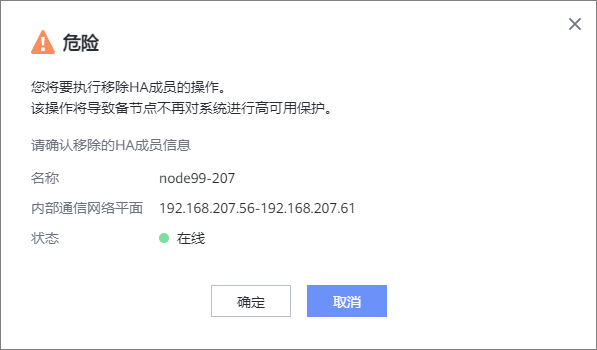

如果您需要移除HA成员，请参考本节操作。移除HA成员后，HA成员变为成员节点。
前提条件
系统中已添加HA成员。
操作步骤
- 选择。
- 选择“备份集群”。
- 选择。
- 系统弹出“危险”提示框，确认提示信息无误后，单击“确定”。


- 移除HA成员完成后，备节点的状态为“删除中”，稍等片刻系统自动进行刷新，状态变为“在线”。
- 强制移除场景：如果待移除的HA成员为离线状态，需要进行强制移除。请在强制移除HA成员前执行以下操作：
- 以管理员或超级管理员身份登录CLI管理界面。
- 执行以下命令查看“gaussdb-0” pod状态。
show container_application general name=dataprotect namespace=dpa
回显如下表示pod状态正常。
PodList: Pod Name Pod Status Pod Restart Times Pod Cpu Percent(%) Pod Memory Percent(%) Pod Belong Node Pod Namespace Pod Is Ready ---------------------------- ---------- ----------------- ------------------ --------------------- --------------- ------------- ------------ gaussdb-0 Running 1 13.33 3.32 node-1 dpa true infrastructure-0 Running 1 -- 8.89 node-1 dpa true dataenableengine-server-0 Running 0 34.00 9.71 node-0 dpa true dataenableengine-server-1 Running 1 34.00 9.71 node-1 dpa true protectengine-e-dma-0 Running 1 1.33 0.32 node-1 dpa true protectengine-0 Running 1 -- 12.37 node-1 dpa true protectengine-1 Running 0 -- 12.37 node-0 dpa true sftp-0 Running 5 -- 0.77 node-1 dpa true protectmanager-biz-service-0 Running 0 13.33 3.73 node-0 dpa true protectmanager-biz-service-1 Running 1 13.33 3.73 node-1 dpa true protectmanager-system-base-1 Running 1 16.67 3.90 node-1 dpa true protectmanager-system-base-0 Running 0 16.67 3.90 node-0 dpa true
如果“gaussdb-0”pod非running状态，请直接强制移除HA成员，不需进行后续操作。
- 执行change user_mode current_mode user_mode=developer命令切换为developer模式。并按提示信息进行操作。
- 执行minisystem命令进入小系统。
- 如果pod状态正常，但备节点显示离线，请在下发强制移除HA节点后立即（5分钟内）执行以下命令停止“gaussdb-0” pod。并按提示信息进行操作。
container.sh -c kubectl delete pod gaussdb-0 -n dpa
回显如下表示pod停止成功。
Storage: minisystem> container.sh -c kubectl delete pod gaussdb-0 -n dpa DANGER: You are going to perform a danger command. Ensure that no container are being used. Otherwise, this behavior causes container service interruption. Suggestion: Before you perform this operation, make sure that the operation will not affect working of system. Have you read danger alert message carefully?(y/n) y Enter "I have read and understand the consequences associated with performing this operation." to confirm running this command. I have read and understand the consequences associated with performing this operation. pod "gaussdb-0" deleted exec kubectl success